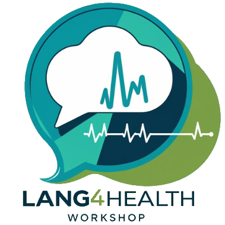
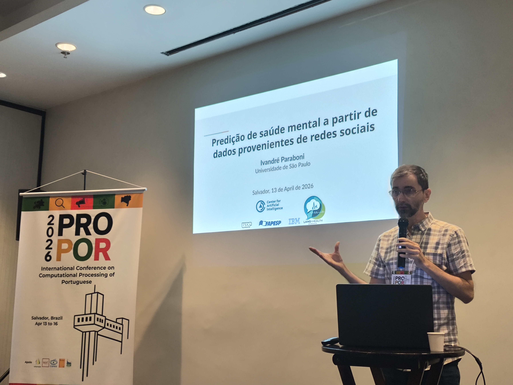
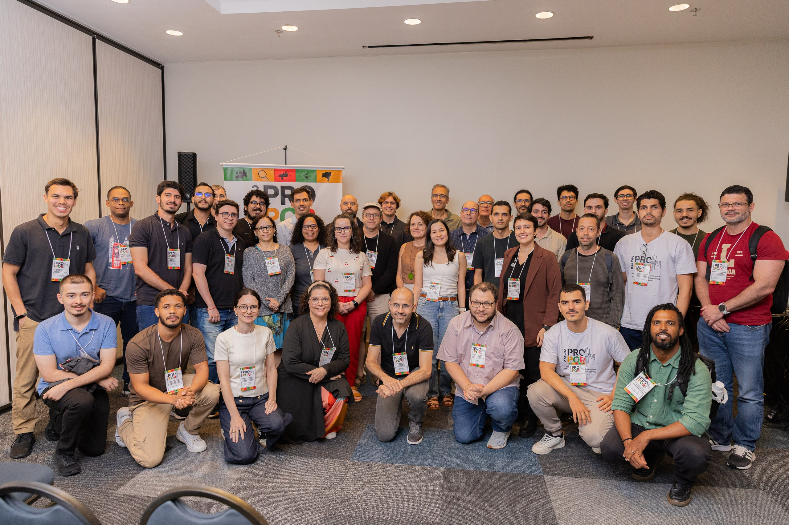

Lang4Health Workshop at PROPOR 2026

April 13, 2026
Description
The First Workshop on Language Technologies for Health (Lang4Health1) is a workshop dedicated to the development and application of Natural Language Processing (NLP) technologies in the healthcare field. Language technologies are becoming more prevalent in health domain for electronic health record (EHR) screening (Da Rocha et al. 2022), dataset construction (Oliveira et al. 2022; Santos, Oliveira, and Paraboni 2024), language representation model development (Gumiel et al. 2019; Nunes et al. 2024) for applications such as named entity recognition (Andrade, Ruas, and Couto 2021; Schneider et al. 2020) or chatbot development (Pires, Caseli, and Neris 2023; Souza et al. 2022). Despite its growing relevance, there are still some open challenges in the field of NLP for healthcare that need to be addressed.
The workshop will provide participants with the opportunity to present and discuss novel research ideas on active and emerging topics related to NLP in healthcare field for Portuguese, Galician and their variants. The workshop will also be an opportunity for researchers and practitioners to collaborate on new projects.
This workshop is proposed in the scope of AIM-Health project, an international research project between Brazil and UK supported by FAPESP and UKRI/MRC – UK Research and Innovation / Medical Research Council, focused on the development of AI and NLP technologies for mental health.
Following the workshop, we intend to invite the authors of the accepted papers to submit an extended version for a special edition of the journal Language Resources and Evaluation.
Lang4Health 2026 will be co-located with PROPOR 2026, which will be held from April 13th to April 16th at Salvador – BA, Brazil. The exact date of the workshop will be announced soon.
Call for Paper
We call for papers describing work on any topic related to computational language and speech processing in the health domain by researchers in industry or academia. The papers must deal with Portuguese language varieties or their dialects. Topics of interest include, but are not limited to:
- Data in health domain
- Dataset/Corpus construction and availability;
- Dataset/Corpus annotation;
- Anonymization and de-identification;
- Augment and synthetic data generation.
- Language technologies in health domain
- Interaction and conversational agents (e.g. chatbots);
- Information extraction and information retrieval;
- Named Entity Recognition;
- Summarization;
- Question Answering;
- Personalization;
- Speech processing;
- NLP-supported diagnosis;
- Accessibility and simplification of information;
- Language support for digital phenotyping.
Submission format
Submissions should describe original, unpublished work. Authors are invited to submit two kinds of papers:
- Full papers – Reporting substantial and completed work, especially those that may contribute in a significant way to the advancement of the field. Wherever appropriate, concrete evaluation results should be included. Full papers can have up to 8 pages of content, plus 2 pages for appendices and unlimited pages of references.
- Short papers – Reporting small, focused contributions such as ongoing work, position papers, potential ideas to be discussed, or negative results. Short papers can have up to 4 pages of content, plus 1 page for appendices and unlimited pages of references.
The papers must be written in English or Portuguese. At submission time, only PDF format is accepted. For the final versions, authors of accepted papers will be given 1 extra content page to incorporate the reviews’ suggestions. Authors of accepted papers will be requested to send the source files for the production of the proceedings. All submitted papers must conform to the ACL style guidelines and use the LaTeX or MS Word stylesheets available at PROPOR 2026.
Multiple-submission policy
For submissions that have been or will be submitted to other meetings or publications, this information must be provided at submission time. If a submission is accepted, authors must notify the program chairs, indicating which meeting they choose for presentation of their work. Papers that will be (or have been) published elsewhere cannot be accepted for publication or presentation.
Review process
Each submission will be evaluated by at least two reviewers. As reviewing will be double-blind, submitted papers must be anonymized. That is, they should not contain the authors’ names and affiliations. Authors must avoid self-references that reveal identity, like “We previously showed (Freitas, 1991) …”. Instead, they should prefer citations such as “Freitas (1991) previously showed …”. Separate author identification information will be required as part of the submission process.
Submit your paper
Important dates
Deadline for paper submission: February 19, 2026 (NEW)
February 2, 2026Notification to authors:
March 10, 2026March 11, 2026Camera-ready deadline: March 20, 2026
Electronic proceedings: March 27, 2026
Lang4Health Workshop: April 13, 2026
Invited Speaker
Ivandré Paraboni
Universidade de São Paulo (USP)
Predição de saúde mental a partir de dados provenientes de redes sociais
(The talk will be in Portuguese)
A palestra explora a tarefa computacional de predição de transtornos de saúde mental a partir de dados de redes sociais. Discutimos a criação de um conjunto de dados específico para a detecção de depressão e transtornos de ansiedade em tweets em português, juntamente com o desenvolvimento e os resultados iniciais de modelos computacionais para essas tarefas. Por fim, abordamos os principais desafios que ainda permanecem para a pesquisa em andamento, e possíveis direções a seguir.
Short Bio
Ivandré Paraboni holds a Ph.D. in Computer Science from the University of Brighton, United Kingdom (2003), and completed a postdoctoral fellowship at the University of Aberdeen, Scotland (2012). He is an Associate Professor (tenured) and researcher at the University of São Paulo (USP), with a full-time appointment at the School of Arts, Sciences, and Humanities (EACH). Research interests span a broad spectrum of human language processing, ranging from computational methods grounded in Cognitive Science to practical applications, such as the classification of web-based documents. He currently supervises research on stance recognition from text, the detection of mental health disorders from multimodal data, the identification of creative thinking, and arbitrary style transfer in natural language generation.
Organizing Committee
Prof. Aline Villavicencio
University of Exeter, UKDr. Rodrigo Wilkens
University of Exeter, UKProf. Helena Caseli
Federal University of São Carlos, BrazilDr. Vânia Neris
Federal University of São Carlos, Brazil
Program Committee
The Lang4Health thanks the researchers that worked as reviewers of submitted papers:
- Aline Paes – Universidade Federal Fluminense (UFF)
- Ana Cleide Guimbal de Aquino – UFRA
- César Sperb – Federal University of Pelotas (UFPel)
- Claudia Moro – Pontificia Universidade Católica do Paraná (PUCPR)
- Elisa Terumi Rubel Schneider – Pontificia Universidade Católica do Paraná (PUCPR)
- Eloize Seno – Federal Institute of São Paulo (IFSP)
- Emerson Paraiso – Pontificia Universidade Católica do Paraná (PUCPR)
- Helena Caseli – Federal University of São Carlos (UFSCar)
- Ivandré Paraboni – University of São Paulo (USP)
- João Papa – São Paulo State University (UNESP)
- Luciana Salgado – Universidade Federal Fluminense (UFF)
- Marcelo Finger – University of São Paulo (USP)
- Maria José Finatto – UFRGS
- Marilia Silveira – Federal University of Pelotas (UFPel)
- Mateus Monteiro – Federal University of São Carlos (UFSCar)
- Murilo Vargas Cunha – Federal University of Pelotas (UFPel)
- Paula Souza – Federal University of São Carlos (UFSCar)
- Renata Vieira – CIDEHUS
- Renato Silva – University of São Paulo (USP)
- Rodrigo Wilkens – University of Exeter
- Sandra Rodrigues – Universidade Federal de Lavras (UFLA)
- Tiago Torrent – Universidade Federal de Juiz de Fora
Accepted papers (Proceedings) & Program
All accepted papers will be presented orally on Lang4Health. Each Long paper will have 20 minutes for the oral presentation plus 5 minutes for questions. Each Short paper will have 12 minutes for the oral presentation plus 3 minutes for questions.
Pictures


Contact information
References
Footnotes
Lang4Health logo was generated using Canva’s AI assistant↩︎